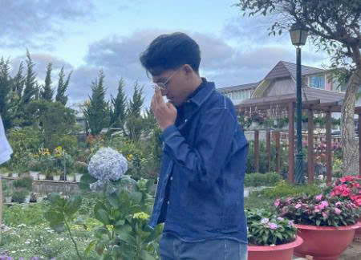
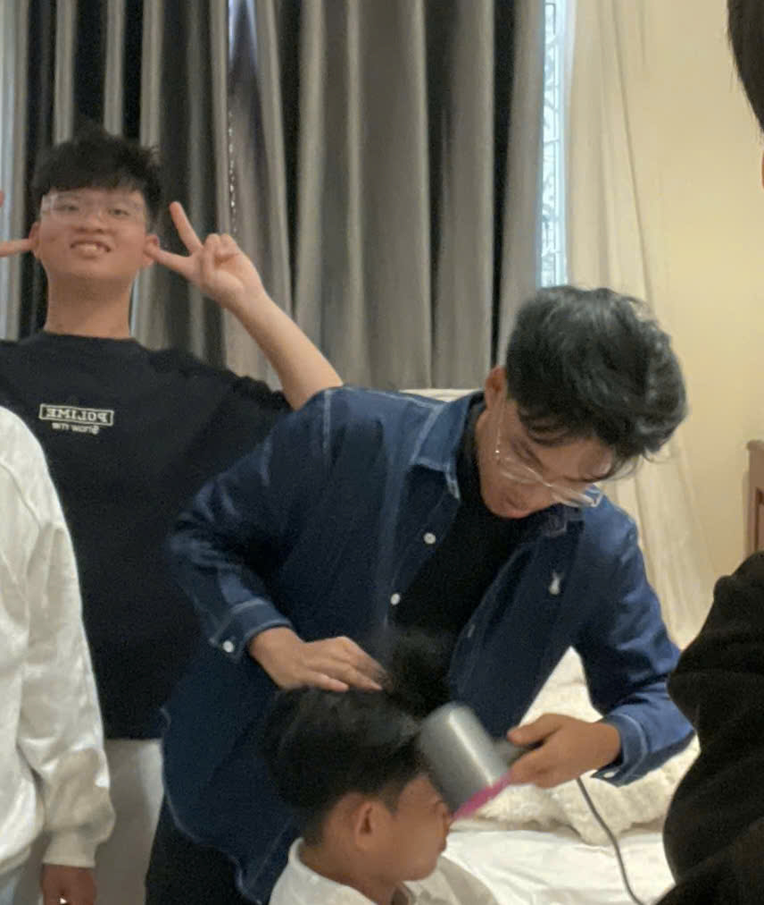
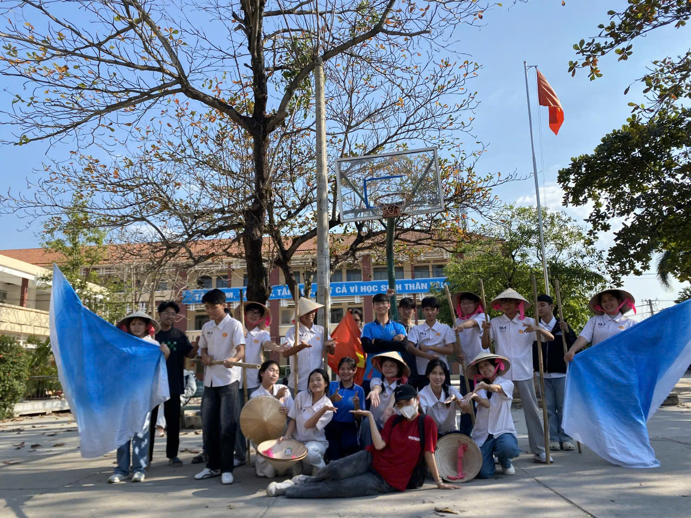
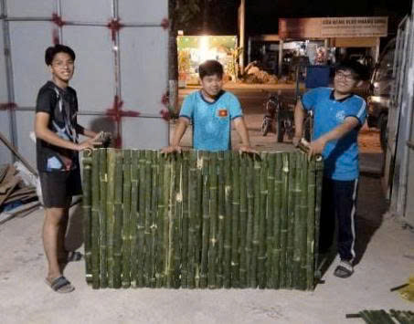

👑 CẢM NHẬN CỦA THÁI TỬ BEVIS 🔥
🎓 ĐẶNG ĐÀM TUẤN ANH - Lớp 12.1 - PHÁ GIA CHI TỬ
🚀 Hoạt động tập thể đã làm thanh xuân thêm bùng cháy 🎉
🎓 ĐẶNG ĐÀM TUẤN ANH - Lớp 12.1 - PHÁ GIA CHI TỬ
🚀 Hoạt động tập thể đã làm thanh xuân thêm bùng cháy 🎉
Đối với mình, quãng thời gian học tập dưới mái trường THPT Huỳnh Văn Nghệ cùng tập thể 12.1 không chỉ là việc học những con số hay trang văn. Đó là một hành trình rực rỡ sắc màu của sự gắn kết và nhiệt huyết.
Mỗi hoạt động tập thể là một ngọn lửa nhỏ, góp phần làm cho thanh xuân của mình trở nên bùng cháy và ý nghĩa hơn bao giờ hết.


Thanh xuân của mình dưới mái trường THPT Huỳnh Văn Nghệ 🎓🏫 không bắt đầu bằng điều gì quá đặc biệt. Chỉ là một ngày nhập học, một lớp học mới, vài ánh nhìn còn xa lạ 👀. Nhưng bằng cách nào đó, những con người từng không quen biết lại dần trở thành cả một phần ký ức không thể tách rời. Và rồi cái tên 12.1 không còn đơn giản là tên một lớp học nữa – nó trở thành một gia đình thật sự ❤️🤝
Ba năm – nghe thì dài. Nhưng quay đầu lại, chỉ như một cái chớp mắt ⏳✨. Những buổi sáng còn ngái ngủ 😴, những lần chạy vội vào lớp vì sợ trễ giờ 🏃♀️💨, những tiếng cười vang lên cuối hành lang 😂🎶… ngày đó mình từng nghĩ là bình thường. Nhưng bây giờ, chỉ cần nhớ lại thôi cũng thấy tim chậm đi một nhịp 💓. Hóa ra, điều bình thường nhất lại là điều khiến người ta tiếc nuối nhất.
Chuyến đi ba ngày hai đêm tại Đà Lạt 🌲❄️ là một trong những ký ức đẹp nhất. Cái lạnh của thành phố sương mù làm những cái khoác vai thêm ấm 🤍🧥. Những bước chân dạo quanh Chợ đêm Đà Lạt 🌙✨, cùng nhau ăn bánh nóng 🍢, uống ly nước ngọt chuyền tay 🥤, chụp những tấm hình cười không thấy mặt trời 📸😆… lúc đó chẳng ai nghĩ đến chia xa. Chỉ biết rằng mình đang rất hạnh phúc 💕. Và hạnh phúc đôi khi đơn giản lắm – chỉ cần những người mình thương đứng cạnh bên.
Những ngày tập văn nghệ mệt rã rời 💃🔥, những buổi dựng gian hàng bằng tre đến trầy cả tay 🎋🛠️, có lúc ai cũng than “mệt quá rồi…” 😩. Nhưng khi đêm diễn kết thúc trong tiếng vỗ tay vang dội 👏🎉, khi gian hàng đông khách và cả lớp ôm nhau cười rạng rỡ 🤗✨, mình mới hiểu rằng chính những giọt mồ hôi ấy đã làm thanh xuân trở nên rực rỡ 🌈. Nếu không có vất vả, sẽ không có tự hào. Nếu không có cố gắng, sẽ không có ký ức để sau này nhắc lại mà rưng rưng 💞
Giờ đây, nghĩ đến ngày phải rời xa nhau, lòng mình nghẹn lại 💔🍂. Rồi mỗi người sẽ bước trên một con đường riêng 🛤️🌅. Sẽ có những môi trường mới, những ước mơ mới, những mối quan hệ mới 🌍. Nhưng mình tin rằng sẽ không nơi nào có một 12.1 thứ hai trong cuộc đời này. Thanh xuân giống như một cơn mưa rào 🌧️. Khi còn ở trong đó, ta chỉ mong trời mau tạnh. Nhưng khi nắng lên rồi ☀️, ta lại ước được ướt thêm một lần nữa. Nếu được chọn lại, mình vẫn sẽ chọn ngồi trong lớp học ấy. Vẫn chọn những con người ấy. Vẫn chọn những ngày ồn ào, những lần cười đến chảy nước mắt 😂💦 và cả những phút lặng im vì sắp phải nói lời tạm biệt 🥺
Vì thanh xuân không cần hoàn hảo ✨
Chỉ cần đủ yêu thương ❤️
Và 12.1 đã cho mình một thanh xuân như thế – rực rỡ 🌈, ồn ào 🎶, đôi khi mệt mỏi 😅 nhưng đầy ắp tình thương 🤍. Rồi một ngày nào đó, khi mỗi người đã trưởng thành 🎓🌟, khi cuộc sống cuốn ta đi thật xa 🚆, mình mong rằng khi nhìn lại, chúng ta vẫn mỉm cười và nói:
“À, đó là những năm tháng đẹp nhất…”
Và nếu cuộc đời là một cuốn sách 📖✨, thì 12.1 chính là chương mà mình sẽ không bao giờ muốn lật qua… dù biết rằng mình buộc phải lớn lên. 💫💞

🔥💃 Những buổi tập cho chương trình “Mừng Đảng Mừng Xuân” đã trở thành một phần ký ức thật sâu sắc trong hành trình cuối cấp của tập thể 12.1 😅✨. Sau những giờ học căng thẳng với bài vở và áp lực thi cử 📚, cả lớp lại cùng nhau tập trung tại sân trường khi ánh chiều dần tắt 🌇🎶. Có những hôm trời trở lạnh, gió thổi qua làm ai cũng run run ❄️🌬️, nhưng tiếng nhạc vang lên là tất cả lại quên đi mệt mỏi. Chúng em bắt đầu bằng những động tác khởi động quen thuộc, rồi cùng nhau luyện từng bước nhảy, từng đội hình sao cho thật đều và đẹp 🌟🤝. Mồ hôi rơi ướt áo 💦, chân tay mỏi nhừ, nhưng không một ai muốn dừng lại
💪💖 Điều đặc biệt nhất không chỉ nằm ở những bước nhảy, mà ở tinh thần đồng đội được vun đắp qua từng buổi tập. Có bạn thuộc động tác rất nhanh 💃✨, sẵn sàng chỉ lại cho những bạn còn lúng túng. Có bạn dù chưa tự tin nhưng vẫn cố gắng tập thêm, tập mãi cho đến khi theo kịp cả nhóm 🚀💫. Không có lời chê trách, chỉ có những câu nói “Cố lên!”, “Làm lại lần nữa nhé!” vang lên đầy động viên 🤝😊. Những tiếng cười giòn tan khi ai đó lỡ nhảy sai 😂🎉 đã khiến không khí trở nên nhẹ nhàng hơn. Chính trong những khoảnh khắc ấy, 12.1 dần trở thành một tập thể thực sự gắn bó, nơi mỗi người đều cảm nhận được mình là một phần quan trọng của đội hình
🌈🔥 Hành trình luyện tập kéo dài qua nhiều ngày liền. Tiếng nhạc quen thuộc vang lên lặp đi lặp lại 🎵, từng nhịp trống như in sâu vào tâm trí. Có lúc cả lớp cùng ngồi bệt xuống sân vì quá mệt 😅🌙, nhưng chỉ cần nghỉ vài phút lại tiếp tục đứng dậy tập tiếp. Mỗi động tác được chỉnh sửa kỹ càng, mỗi bước di chuyển đều được tính toán để tạo nên sự đồng đều và mạnh mẽ. Chúng em hiểu rằng phía sau vài phút biểu diễn trên sân khấu là biết bao giờ luyện tập và nỗ lực không ngừng 💦✨. Và chính điều đó khiến ai cũng quyết tâm không bỏ cuộc
🎤✨ Rồi ngày biểu diễn cũng đến. Đứng sau cánh gà, tim ai cũng đập nhanh vì hồi hộp ❤️🔥🎶. Tiếng nhạc mở đầu vang lên như một tín hiệu quen thuộc, và cả lớp nắm chặt tay nhau để tiếp thêm tự tin 🤝💞. Khi bước ra sân khấu dưới ánh đèn rực rỡ 🌟🔥, mọi lo lắng dường như tan biến. Trước mắt là khán đài đông kín, tiếng cổ vũ vang dội làm không khí trở nên sôi động hơn bao giờ hết 👏🎊. Từng bước nhảy được thực hiện đồng đều, từng đội hình chuyển đổi nhịp nhàng, tất cả hòa quyện cùng giai điệu đầy khí thế
💖🇻🇳 Trong khoảnh khắc ấy, chúng em không chỉ đang biểu diễn, mà còn đang thể hiện tinh thần tuổi trẻ, sự đoàn kết và niềm tự hào về tập thể của mình. Khi tiết mục kết thúc trong những tràng pháo tay không ngớt 🌈👏, cả lớp nhìn nhau bằng ánh mắt rạng rỡ và đầy xúc động. Mọi mệt mỏi trước đó bỗng trở nên xứng đáng. Đó không chỉ là một tiết mục văn nghệ, mà là minh chứng cho sự nỗ lực, kiên trì và tinh thần hết mình của 12.1 🚀🎓. Những ngày tháng luyện tập ấy đã góp phần tạo nên một mảnh ghép rực rỡ trong bức tranh thanh xuân của chúng em 🌟💫 — để sau này khi nhìn lại, ai cũng có thể tự hào vì đã từng cùng nhau cháy hết mình như thế

Hội Trại của 12.1 🎪🎋🤍
Năm lớp 12.1 – năm học cuối cùng dưới mái trường THPT Huỳnh Văn Nghệ 🎓🏫 – có lẽ là quãng thời gian đong đầy cảm xúc nhất của tuổi học trò. Và trong tất cả những kỷ niệm ấy, Hội trại của 12.1 luôn là một mảnh ghép rực rỡ, vừa ồn ào, vừa ấm áp, vừa khiến tôi mỗi lần nhớ lại đều thấy lòng mình dịu xuống 💓
Ngay từ những ngày đầu chuẩn bị, cả lớp đã rộn ràng bàn bạc 💬✨. Chúng tôi quyết định dựng một gian trại bằng tre 🎋 – mộc mạc nhưng nổi bật, giản dị mà chan chứa tinh thần đoàn kết. Những thanh tre được khiêng vào sân trường, tiếng cưa vang lên, tiếng dây buộc siết chặt từng nút như thắt chặt thêm tình bạn của cả lớp 🔨. Có lúc khung trại chưa vững, cả nhóm phải cùng nhau giữ chặt và điều chỉnh từng chút một. Dưới cái nắng nhẹ ☀️, mồ hôi lấm tấm trên trán nhưng chẳng ai than mệt. Bởi ai cũng hiểu rằng, đây có thể là một trong những hoạt động tập thể cuối cùng của năm cuối cấp.
Khi gian trại hoàn thành, lớp bắt đầu chuẩn bị những món ăn do chính tay mình làm 🍞🍢🥤. Bánh mì nướng giòn tan, hoành thánh chiên vàng ruộm, bánh tráng chấm đậm vị, trà trái cây mát lạnh và trà tắc thái xanh chua nhẹ… Mỗi người một việc: người nướng bánh 🔥, người pha trà 🍹, người thu tiền 💵. Mùi thơm lan tỏa khắp sân trường, hòa cùng tiếng cười nói rộn ràng 😂🎶 tạo nên một không khí náo nhiệt nhưng ấm áp vô cùng.
Có những lúc khách đứng chờ đông kín, chúng tôi làm việc không ngơi tay 😅. Mệt thật đấy, nhưng chẳng ai muốn dừng lại. Vì niềm vui không nằm ở số tiền thu được, mà nằm ở ánh mắt rạng rỡ của cả lớp khi gian trại đông khách 🤗✨. Là những cái vỗ vai động viên khi hơi quá tải. Là những tiếng cười vang lên giữa bộn bề áp lực thi cử 📚⏳.
Hội trại hôm ấy không chỉ là một hoạt động ngoại khóa. Đó là nơi chúng tôi được sống hết mình với tuổi trẻ 🎪🌈. Không còn điểm số, không còn lo lắng, chỉ còn sự đoàn kết và một trái tim chung mang tên 12.1 ❤️
Khi mọi thứ khép lại, nhìn gian trại tre giản dị đứng đó, lòng tôi bỗng nghẹn lại 💔. Rồi đây mỗi người sẽ bước trên một con đường riêng 🛤️. Nhưng tôi tin rằng ký ức về Hội trại của 12.1 sẽ mãi ở lại – như một biểu tượng của tinh thần đồng lòng, của tình bạn trong trẻo và của một thanh xuân không thể quay lại.
Tuổi học trò không chỉ có bài vở và những kỳ thi căng thẳng. Tuổi học trò còn có những ngày cùng nhau vất vả mà hạnh phúc, cùng nhau trưởng thành qua từng trải nghiệm giản dị 🤍✨. Và Hội trại của 12.1 chính là minh chứng đẹp nhất cho điều đó. Nếu sau này có ai hỏi tôi điều gì khiến năm lớp 12 trở nên đặc biệt, tôi sẽ mỉm cười và trả lời: Đó là ngày chúng tôi cùng dựng nên một gian trại bằng tre… nhưng vô tình lại dựng nên cả một phần ký ức không bao giờ phai trong tim mình 💞🌸.
Suy nghĩ: ⏳🎓 Thời gian lặng lẽ trôi qua thật nhanh, mới hôm nào còn ngập ngừng bước vào 12.1 😌📚 mà giờ đây đã chạm gần những ngày cuối của tuổi học trò 🌤️💖. Từng giờ học căng thẳng, từng buổi ôn bài miệt mài hay tiếng cười rộn rã giờ ra chơi 😂✨ đều trở thành ký ức quý giá. Em chỉ mong giữ mãi những khoảnh khắc ấy để sau này nhìn lại, chúng ta vẫn mỉm cười vì đã có một thanh xuân rực rỡ 🌈🌟
🌟📖 Ba năm cấp ba như một cái chớp mắt ⏰💫, 12.1 từ xa lạ đã hóa thân quen 🤝💞. Những áp lực thi cử, những lần cùng nhau cố gắng 💪🎓 và cả những trò đùa hồn nhiên 😂🎉 đã dệt nên một bức tranh thanh xuân đầy màu sắc 🎨🌈. Mong rằng mai này, khi mỗi người một nơi 🚀, chúng ta vẫn nhớ về nhau bằng nụ cười ấm áp 😊💖
🎒✨ Tháng năm cuối cấp đến thật nhanh, để lại trong tim biết bao cảm xúc bồi hồi 💕🌤️. Từ những buổi học nghiêm túc 📚 đến những phút giây nghịch ngợm đáng yêu 😂🎊, tất cả đều là mảnh ghép không thể thiếu của tuổi trẻ. Hy vọng rằng ký ức về 12.1 sẽ mãi là ánh sáng dịu dàng soi rọi những chặng đường phía trước 🚀🌟
Ước mơ: ✨ 🎓✨ Ước mơ của em không chỉ dừng lại ở thành công cá nhân 💪💖, mà là mong cả 12.1 cùng nhau vượt qua kỳ thi quan trọng với kết quả thật rực rỡ 🌟📚. Hy vọng mỗi thành viên sẽ tự tin, bản lĩnh và mạnh mẽ bước tiếp 🚀🔥, mang theo tình bạn và niềm tự hào về một tập thể đầy yêu thương 🤝💞
🌈🎯 Em mong rằng không ai bị bỏ lại phía sau trong hành trình chinh phục cánh cửa đại học mơ ước 🏫✨. Từng người trong 12.1 hãy vững tin vào chính mình 💫💙, cùng nhau viết tiếp ước mơ bằng sự quyết tâm và đoàn kết 💪🤍
🚀🎓 Thành công sẽ ý nghĩa hơn khi chúng ta cùng nhau chạm đến 🌟💖. Em tin rằng 12.1 sẽ bước qua kỳ thi với tinh thần mạnh mẽ nhất 🔥📖, để sau này nhìn lại, chúng ta có thể tự hào vì đã sát cánh bên nhau trong những ngày quan trọng nhất 🤝✨
💫📚 Mong mỗi thành viên 12.1 luôn giữ vững niềm tin và khát vọng 🌟🔥, cùng nhau mở ra cánh cửa tương lai bằng nỗ lực và ý chí bền bỉ 🚪🎓. Dù mai này mỗi người một hướng đi 🌤️, tình bạn và ký ức đẹp của chúng ta sẽ mãi ở lại trong tim 💕🌈.
🎓 Hy vọng chúng ta đều chạm tay vào được cánh cửa Đại học mơ ước.